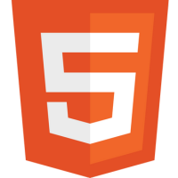
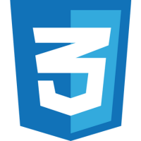
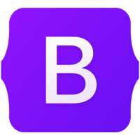

Técnicas
Tecnologías y herramientas que domino
-

HTML5 -

CSS3 - JavaScript
-

Bootstrap -
 Figma
Figma - WordPress
- SEO
- Diseño responsivo y accesibilidad web
Blandas
Competencias interpersonales y de liderazgo
- Comunicación efectiva
- Trabajo en equipo
- Resolución de problemas
- Adaptabilidad y aprendizaje continuo
- Gestión del tiempo y organización